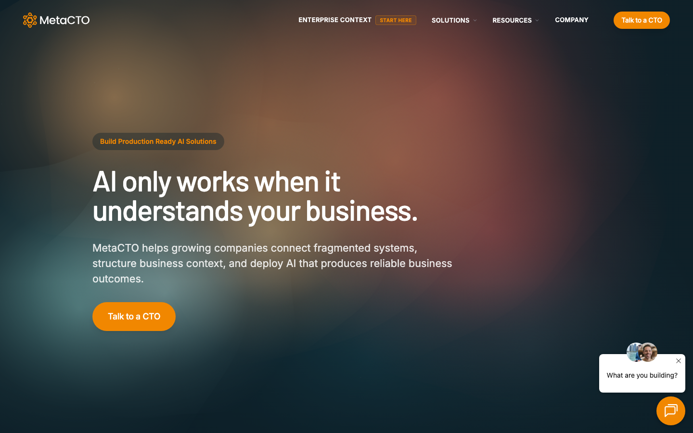
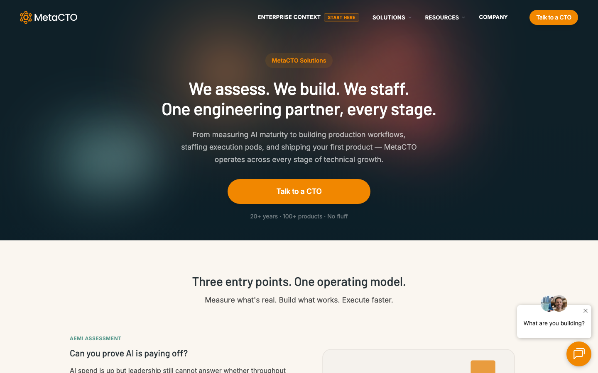
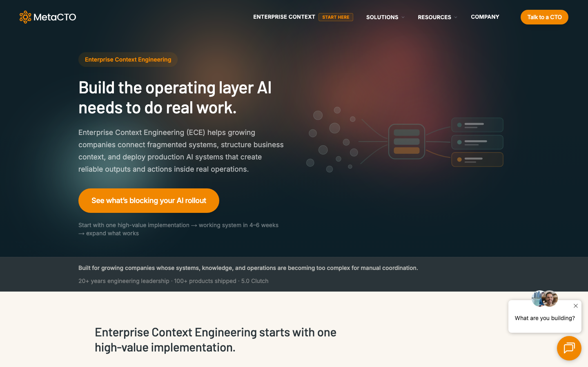

metacto
Building Production Ready AI Solutions
Team Meeting ·
May 2026
metacto
Why Now
The client problem changed
The work evolved.
The positioning caught up.
Before
Product Dev + Rescue
Build the app →
Fix the system →
Rescue the project →
Ship the MVP
Now
Production AI Systems
Connect the systems →
Structure the context →
Automate the workflow →
Deploy the agent →
Operate the AI system
This is not a hard pivot. The reason we can do this work is because we know production systems.
metacto · Brand Relaunch
02 / 12
metacto
Industry
The industry is converging
Context Engineering is the new discipline.
Tobi Lütke
“I really like the term context engineering over prompt engineering. It describes the core skill better: the art of providing all the context for the task to be plausibly solvable by the LLM.”
Shopify CEO · June 2025. The tweet that named the discipline.
Andrej Karpathy
“Context engineering is the delicate art and science of filling the context window with just the right information for the next step.”
Ex-OpenAI, ex-Tesla AI · June 2025. Endorsed the shift from prompts to full context design.

“To build production-grade agents, treat context as a first-class system with its own architecture, lifecycle, and constraints.”
Google ADK · Agent Development Kit built around active context engineering for multi-agent systems.
Anthropic
“Building with LLMs is becoming less about finding the right words and more about: what configuration of context is most likely to generate our model’s desired behavior?”
Anthropic Engineering · Sept 2025. Published alongside Claude Sonnet 4.5 launch.
metacto · Brand Relaunch
03 / 12
metacto
Resources
Resources for the team
How we talk about ECE and production AI.
Homepage

Production-ready AI positioning
Solutions

Full offer structure
ECE

ECE framework and use cases
metacto · Brand Relaunch
04 / 12
metacto
Production AI
What production AI actually looks like
The chatbot is 5%. The system is 95%.
5%
Visible
“The chatbot”
95%
Invisible
Model & Inference
LLM routing, caching, version pinning
Agent Orchestration
State machines, multi-agent loops
Memory & RAG
Vector DBs, context, session state
Tools & Actions
MCP servers, APIs, code execution
Observability & Tracing
Prompts, tool calls, tokens, latency, cost
Evals
Regression suites, LLM-as-judge, CI for AI
Guardrails & Safety
Injection defense, PII redaction, filtering
Human-in-the-Loop
Approval workflows, escalation paths
Durable Runtime
Async execution, queues, retries, timeouts
Auth & Multi-tenancy
Per-tenant scoping, secrets, permissions
Prompt Management
Versioning, diffing, rollback
Cost & Quota Controls
Budget caps, rate limits, usage metering
Frontend & UX
Streaming, tool-call viz, interrupt/cancel
metacto · Brand Relaunch
05 / 12
metacto
ECE Framework
Enterprise Context Engineering
Context. Intelligence. Control.
Context
What AI can understand
The data, relationships, and business logic AI needs to operate.
- Connected data across your apps
- Role-based access controls
- Business objects and relationships
- Retrieval tuned per workflow
Intelligence
What AI can execute
The agents, workflows, and actions that produce useful output.
- Agents and multi-step workflows
- Human review checkpoints
- Actions into CRM, email, docs
- Retrieval + reasoning strategies
Control
What makes AI reliable
The evals, feedback, and governance that keep it running.
- Testing and eval cases
- Feedback loops
- Cost and usage visibility
- Security and compliance
CRM
Docs
Email
Slack
→
Context Layer
→
Workflow / Agent
→
Brief
Draft
Score
Action
metacto · Brand Relaunch
06 / 12
metacto
AI Offers
The four new AI offers
Production-Ready AI Systems
Production-Ready AI Systems
Foundation
Enterprise Context Engineering
Build the context layer AI needs. Connect fragmented systems, structure business context, deploy production AI.
Implementation
Agentic Workflows
Automate one repeatable workflow end to end. Ship in 4–6 weeks with connected systems and structured context.
Agents
Autonomous Agents
Deploy scoped agents inside real tools with guardrails. Built on existing tools and business context with human oversight.
Operations
AI Operations
Keep production AI reliable after launch. Monitoring, evals, tuning, model upgrades, and incident response.
ECE is the foundation. Workflows are the first implementation. Agents are scoped roles. AI Ops keeps it running.
metacto · Brand Relaunch
07 / 12
metacto
Client Examples
What this looks like in real work
Same pattern. Different clients.
Ops AI
AI scores leads and drafts proposals from GTM context
Agents use ICP rules, CRM history, and 115 business docs to qualify leads and assemble proposals automatically.
HubSpot
Apollo
DarcyIQ
Drive
Product AI
AI copilot triages compliance violations inside the platform
11 AI surfaces embedded in Alliant's product: risk detection, CPR ingestion, copilot with citations, and governed review queues.
Payroll CPRs
Wage data
Internal platform
Product AI
AI personalizes security training and scores phishing risk
Crawl/Walk/Run AI roadmap: phishing report automation, personalized training paths, and compliance analytics built into the platform.
Snowflake
Sigma
MongoDB
Jira
Big State Home Buyers
Ops AI
AI flags deal risk and handles seller inquiries before an agent touches it
Dispo price triage scores every incoming deal on equity confidence. Intercom + Fin AI fields seller questions from the knowledge hub, escalating only when confidence is low.
Deal alerts
Intercom
Fin AI
Knowledge Hub
Boondocker
Product AI
AI turns a photo of a flyer into a published event listing
Venues photograph a poster and the system extracts structured event data, flags duplicates, and stages the listing for one-tap publish with moderation controls.
iOS/Android
Image extraction
Admin dashboard
metacto · Brand Relaunch
08 / 12
metacto
Evolution
Where the current work still fits
An evolution of the work, not a replacement.
Top Layer
AI Offers
The new production AI capabilities.
Enterprise Context Engineering
Agentic Workflows
Autonomous Agents
AI Operations
↑
Middle Layer
Systems & Data
The connective tissue that makes AI possible.
Integrations
Data quality
Workflows
Permissions
Auth
APIs
↑
Foundation
Product Engineering + Rescue
Still core. Stable systems underneath production AI.
Product development
Project rescue
Technical debt
Platform stability
MVP builds
Lightning Pods
Delivery model across all layers — expert humans + purpose-built agents
metacto · Brand Relaunch
09 / 12
metacto
Delivery
What changes in delivery
When we scope AI work, we ask different questions.
01
What workflow repeats every week?
02
Where does the context live?
03
What should the system produce?
04
What action is it allowed to take?
05
Who reviews or approves it?
06
How do we know the output is good?
07
What needs to be logged, monitored, and improved?
metacto · Brand Relaunch
10 / 12
MetaCTO builds production-ready software and AI systems for companies with messy real-world operations.
We connect the systems, structure the context, and ship workflows, agents, and products that teams can actually use.
Trusted Context. Usable Outputs. Reliable Actions.
metacto
metacto
Next Steps
What to do next
For the team
✓
Read the new homepage, Solutions page, and ECE page.
✓
Bring one current client workflow that might fit this pattern.
✓
Practice the new talk track with your own words.
✓
Pick one learning lane and go deeper.
Context engineering
Agents and tools
RAG and retrieval
Evals and observability
AI operations
Human-in-the-loop systems
Up to $200 credit for AI learning
Buy and complete a course on any of the listed topics. We'll reimburse up to $200.
Udacity
Coursera
Google
LangChain
Anthropic
Have fun. This is the work getting more interesting.
Q&A with Chris and Garrett
metacto · Brand Relaunch
12 / 12